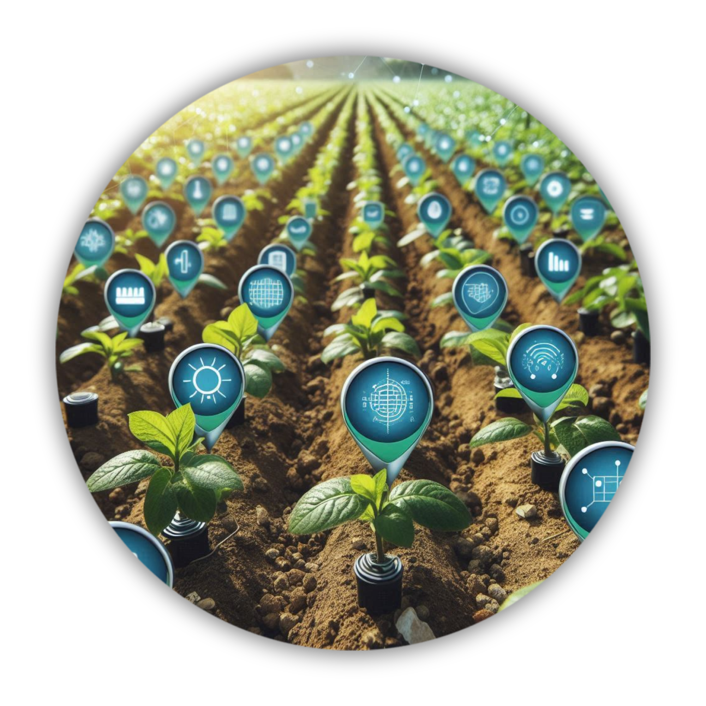
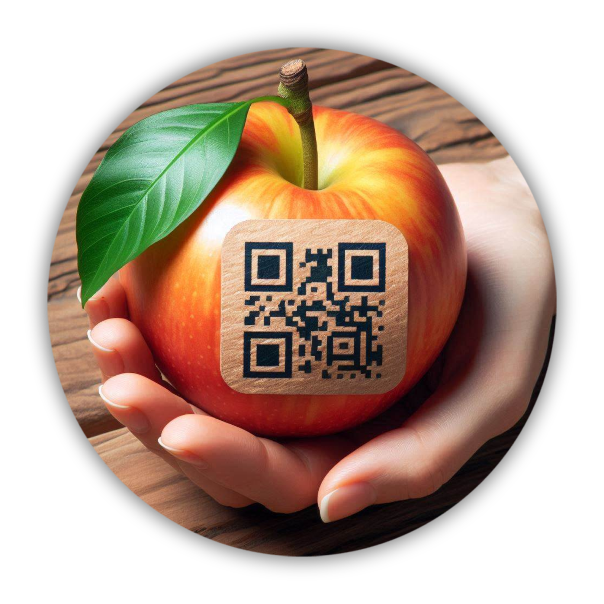

Bem-vindo à página de Inovação, onde exploramos técnicas revolucionárias que unem o campo e a cidade em um cenário de progresso sustentável. Nesta jornada de descoberta, destacamos como a inovação está moldando o futuro da agricultura e das comunidades urbanas, transformando desafios em oportunidades tangíveis.
Técnicas Avançadas
Agro-Tecnologia de Precisão: Utilizando sensores e IoT para monitorar condições de solo, clima e saúde das plantas em tempo real, aumentando a eficiência e reduzindo o uso de recursos.

Agricultura Vertical e Urbana: Cultivo em ambientes controlados e integrados à infraestrutura urbana, promovendo a produção local de alimentos frescos e reduzindo a pegada ambiental.

Gestão Inteligente de Resíduos: Transformando resíduos agrícolas em recursos valiosos através de técnicas como compostagem e bioenergia, contribuindo para uma economia circular e sustentável.
Blockchain na Cadeia de Suprimentos: Garantindo transparência e rastreabilidade desde o campo até o consumidor final, promovendo a segurança alimentar e o comércio justo.
Benefícios para o Futuro
Ao adotar estas técnicas inovadoras, não apenas promovemos um desenvolvimento econômico inclusivo, mas também fortalecemos a resiliência das nossas comunidades frente aos desafios globais. Juntos, estamos colhendo oportunidades para um amanhã mais verde, conectado e sustentável.